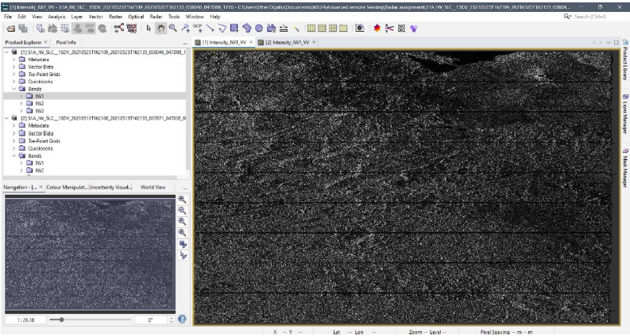

Assessing Post-Eruption Surface Displacement with Sentinel-1 InSAR
Background
Mount Nyiragongo, an active stratovolcano in the Democratic Republic of Congo (DRC), is known for its frequent and hazardous eruptions. With a quasi-permanent lava lake at its summit, Nyiragongo poses a significant risk to nearby populations, as evidenced by its major eruptions in 1977, 2002, and most recently, 2021. The 2021 event alone displaced tens of thousands and caused extensive damage.
My recent study, focused on using radar technology to analyze ground displacement caused by volcanic activity at Mount Nyiragongo. This work is important for early detection, risk assessment, and ultimately, disaster preparedness in such a volatile region.
Workflow
To understand the ground deformation, I utilized Interferometric Synthetic Aperture Radar (InSAR) techniques. Here’s a breakdown of my workflow:
a. Data preparation
Data was downloaded from the ASF data research vertex of the study area before the volcanic eruption of May 22nd, 2021. The before eruption image is May 13th 2021, and the after image is May 25th 2021. The data was then loaded into SNAP as below.

Within SNAP, I performed a TOPS split for each image, focusing on the IW1 sub-swath with VV polarization and bursts 1 to 5, ensuring comprehensive coverage of the study area. Following this, orbit files were applied to both split images to refine their geometric accuracy.
b. Generation of topographic interferogram
The next critical step was coregistration, where the before-eruption image (May 13th) was set as the master and the after-eruption image (May 25th) as the slave. The SRTM DEM (Shuttle Radar Topography Mission Digital Elevation Model) was incorporated to account for terrain variations.
Initial interferogram generation revealed significant noise, particularly in the phase image, making fringes (which indicate displacement) less visible. However, the coherent image clearly highlighted coherent zones, areas where the radar signal remained consistent between the two acquisition dates. To improve the signal, TOPSAR debursting was applied to the interferometric phase.
 |
 |
c. Creating the Differential Interferogram
To isolate the displacement signal, topographic phase removal was performed. This step subtracts the topographic contribution from the interferometric phase, leaving only the deformation component.
Following this, multilooking was applied to reduce speckle noise and improve the visual quality of the interferometric images. Finally, Goldstein phase filtering was used to further enhance the phase signal, making the displacement fringes much clearer and interpretable. The comparison between the images before and after filtering clearly demonstrated the effectiveness of this step.

d. Generating the Displacement Map
The filtered interferogram was then exported to SNAPHU for phase unwrapping. This process converts the wrapped phase (which ranges from −π to π) into a continuous, absolute phase, directly proportional to ground displacement. The unwrapped product was then imported back into SNAP.
The final step involved converting the unwrapped phase into a displacement map. This involved a “Phase to Displacement” operation within SNAP, which translates the phase changes into actual ground movement values.

Results: Visualizing Ground Displacement
The displacement image, after terrain correction, was then visualized in Google Earth, providing a powerful and intuitive representation of the volcanic impact.

The results clearly showed distinct zones of displacement:
White and Yellow Areas: These areas indicated significant ground displacement, highlighting regions severely affected by the volcanic activity. Notably, white areas near Goma corresponded to reported high-impact zones.
Green Areas: These represented minimal displacement.
Blue Areas: These showed little to no displacement, or even negative displacement.
The white and yellow zones are high-risk areas during volcanic events. For effective disaster preparedness, these zones and their immediate surroundings should be prioritized, especially when volcanic activity is anticipated.
This study demonstrates the value of radar remote sensing in monitoring and understanding geohazards like volcanic eruptions, providing critical insights for safeguarding communities.
References
Burgi, P.-Y., Boudoire, G., Rufino, F., Karume, K., & Tedesco, D. (2020). Recent Activity of Nyiragongo (Democratic Republic of Congo): New Insights From Field Observations and Numerical Modeling. Geophysical Research Letters, 47(17), e2020GL088484. https://doi.org/https://doi.org/10.1029/2020GL088484
Munguiko, O., Maska, S., Habari, F. S., Minani, A. S., Bakole, E., Mavonga, T., Ngangu, B., Sadiki, A. T., & Balezi, G. (2024). Lava lake activity at Nyiragongo volcano between the years 2020 and 2021 documented by seismic activity and sulfur dioxide emissions, DRC. Volcanica, 7(2), 607–619. https://doi.org/10.30909/vol.07.02.607619